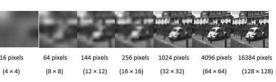

Бионический глаз — мифы и реальность
21 / 05 / 2019
Можете ли вы представить себе, что чувствует человек, который не видит или почти не видит окружающий мир? Такое состояние называется слепотой – невозможностью воспринимать зрительные стимулы из-за патологических нарушений в самом глазу, в зрительных нервах или в мозге.
В 1972 году Всемирная Организация Здравоохранения (ВОЗ) приняла следующее определение: человек считается слепым, если острота центрального зрения в условиях максимальной коррекции не превышает 3/60. При таком зрении человек в условиях дневного освещения с максимальной коррекцией оптики неспособен сосчитать пальцы с расстояния в 3 метра.
Так вот для таких случаев была предложена идея электрической стимуляции сетчатки или зрительной коры, создание протеза, который по механизму действия имитирует настоящие процессы передачи электрических сигналов.
Вариантов электронных имплантов несколько, каждый год появляются новые идеи, но термин и сам «Бионический глаз» (Bionic Eye) разработан Дэниелом Паланкером, сотрудником Стэнфордского университета и его научной группой «Биомедицинской физики и офтальмологических технологий».
Имплантация модели бионического глаза Argus II (кстати, единственной модели, имеющей ЕС марку, но не сертифицированной в России) была выполнена в России в июле 2017 года одному пациенту. И со всех источников телевещания мы услышали – теперь человек сможет увидеть мир как раньше. Сотни людей просят поставить бионический глаз, а некоторые вдобавок просят «вживить» чипы для суперзрения.
Так что же мы на сегодняшний день имеем и может ли стать явью мечта увидеть мир после того, как потерял зрение?
Биологические аспекты протезирования сетчатки
Бионическими называют протезы и имплантируемые элементы частей организма человека, которые подобны по внешнему виду и функциям на настоящие органы или конечности. На сегодняшний день людям успешно помогают в полноценной жизни бионические руки, ноги, сердца, а также органы слуха. Цель создания электронного глаза — помочь слабовидящим с проблемами сетчатки или зрительного нерва. Имплантируемые вместо поврежденной сетчатки устройства должны заменить миллионы клеток фоторецепторов глаза, пусть не на все 100%.
Технология для глаз похожа на ту, которая используется в слуховых протезах, помогающим глухим людям слышать. Благодаря ей пациенты имеют меньше шансов потерять остаточное зрение, а утратившие зрение — видеть свет и иметь хоть какую-то способность ориентироваться в пространстве самостоятельно.
Технологические аспекты
Общий принцип действия электронного глаза следующий: в специальные очки встраивается миниатюрная камера, с нее информация об изображении передается в девайс, который преобразует картинку в электронный сигнал и отсылает его на специальный передатчик, который в свою очередь посылает электронный сигнал на имплантированный в глаз или в мозг приёмник, или информация передается через крошечный проводок на электроды, присоединенные к сетчатке глаза, они стимулируют оставшиеся нервы сетчатки, посылая электрические импульсы в головной мозг через оптические нервы. Устройство призвано компенсировать утраченные зрительные ощущения при полной или неполной потере зрения.
Главные условия успешной работы системы:
- Наличие в глазу и мозгу пациента части живых нервных клеток.
- Пациентами должны быть люди, которые когда-то нормально видели, так как тот, кто слепой от рождения, пользоваться такими устройствами не сможет. Подходят люди, долгое время видевшие и имеющие богатый зрительный опыт. В результате они мало видят, но имеют представления о предметах и догадываются что это за предмет. Короче, должна быть развита кора головного мозга и обладание достаточным интеллектом.
- И, понятно, чем больше пикселей будет в чипе, тем четче будет полученное изображение. 
- Длительный срок эксплуатации – пока срок использования этих устройств никто не знает. Первая имплантация бионических глаз в Германии закончилась тем, что их через год всем пациентам удалили. Даже тем, кто что-то видел. Об этом даже в прессе Германии писали.
- Технологичный способ подзарядки. Сейчас они работают по принципу индукции, не на батарейках. Заряжаются как электрическая зубная щетка.
- Попутно должен решаться вопрос окисления, нагрева и т.п. Например, дырчатая конструкция после имплантации может позволить нервным клеткам сетчатки автоматически перетекать с верхней и нижней поверхностей фотодатчика через полости и соединяться, а также уменьшить нагрев пикселей и увеличить их количество.
Микрохирургические аспекты протезирования
Это обширнейшие операции. Если описать, например, имплантацию субретинального (расположенного под сетчаткой) бионического глаза – нужно полностью сетчатку поднять, потом сделать обширную ретинэктомию (обрезать часть сетчатки), потом под сетчатку установить этот чип, затем сетчатку пришить ретинальными гвоздями, приклеить сетчатку лазеркоагуляцией и залить силиконовым маслом. Силиконовая тампонада необходима, иначе моментально появится ПВР (пролиферативная витреоретинопатия) и возникнет отслойка. Да, еще и хрусталика собственного не должно быть или он должен быть предварительно заменен на искусственную линзу.
Для операции нужны особые инструменты с щадящими силиконовыми наконечниками. Это совершенно непростая операция, кроме того еще нужен оро-фациальный хирург или ЛОР – они через кожу выводят электроды наружу. И получается такое устройство – чип внутри глаза, а в руках такой приборчик величиной с мобильный телефон, которым ты можешь изменять интенсивность сигнала, он соединяется с подкожными электродами. Одного офтальмолога-хирурга при операции недостаточно – нужна помощь других дисциплин, операция длится долгих 6 часов.
 Отправить
Отправить